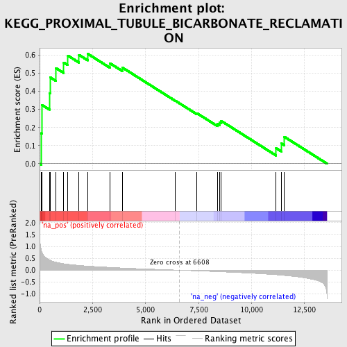
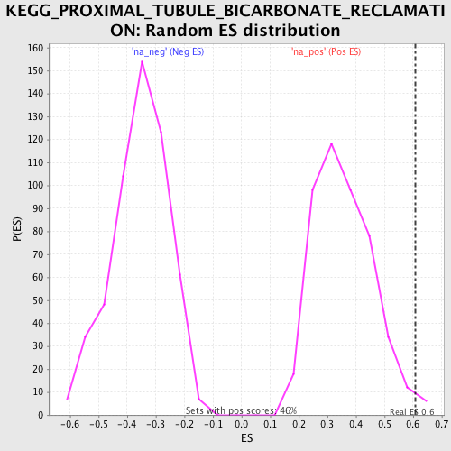

| | | Dataset | GSEA_Acromegaly_prerank |
| Phenotype | NoPhenotypeAvailable |
| Upregulated in class | na_pos |
| GeneSet | KEGG_PROXIMAL_TUBULE_BICARBONATE_RECLAMATION |
| Enrichment Score (ES) | 0.6070246 |
| Normalized Enrichment Score (NES) | 1.6988842 |
| Nominal p-value | 0.012987013 |
| FDR q-value | 0.0326997 |
| FWER p-Value | 0.32 |
Table: GSEA Results Summary

Fig 1: Enrichment plot: KEGG_PROXIMAL_TUBULE_BICARBONATE_RECLAMATION
Profile of the Running ES Score & Positions of GeneSet Members on the Rank Ordered List
| PROBE | GENE SYMBOL | GENE_TITLE | RANK IN GENE LIST | RANK METRIC SCORE | RUNNING ES | CORE ENRICHMENT | | 1 | ATP1A2 | | | 80 | 0.825 | 0.1685 | Yes |
| 2 | CA2 | | | 117 | 0.750 | 0.3244 | Yes |
| 3 | GLUD2 | | | 469 | 0.434 | 0.3903 | Yes |
| 4 | SLC25A10 | | | 493 | 0.421 | 0.4776 | Yes |
| 5 | PCK2 | | | 771 | 0.337 | 0.5284 | Yes |
| 6 | SLC4A4 | | | 1138 | 0.272 | 0.5589 | Yes |
| 7 | ATP1B2 | | | 1336 | 0.249 | 0.5971 | Yes |
| 8 | ATP1A4 | | | 1857 | 0.202 | 0.6014 | Yes |
| 9 | MDH1 | | | 2272 | 0.171 | 0.6070 | Yes |
| 10 | GLS2 | | | 3321 | 0.119 | 0.5547 | No |
| 11 | CA4 | | | 3908 | 0.092 | 0.5310 | No |
| 12 | SLC9A3 | | | 6400 | 0.006 | 0.3484 | No |
| 13 | GLUD1 | | | 7422 | -0.029 | 0.2790 | No |
| 14 | GLS | | | 8392 | -0.063 | 0.2207 | No |
| 15 | PCK1 | | | 8485 | -0.066 | 0.2279 | No |
| 16 | ATP1B3 | | | 8563 | -0.069 | 0.2367 | No |
| 17 | ATP1A1 | | | 11157 | -0.192 | 0.0859 | No |
| 18 | ATP1B1 | | | 11416 | -0.211 | 0.1115 | No |
| 19 | AQP1 | | | 11547 | -0.221 | 0.1487 | No |
Table: GSEA details [plain text format]

Fig 2: KEGG_PROXIMAL_TUBULE_BICARBONATE_RECLAMATION: Random ES distribution
Gene set null distribution of ES for KEGG_PROXIMAL_TUBULE_BICARBONATE_RECLAMATION